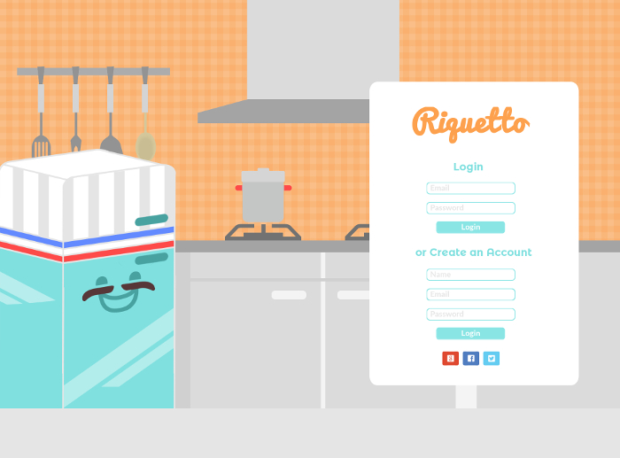

"Riquetto"
Explication
"Riquetto" est un projet en cours et avant tout un organisateur de repas. Il créer automatiquement des menus personnalisés pour la semaine, comprenant le nombre de personnes présentes au différents repas, leur type de régime alimentaire ainsi que le temps dont vous disposer pour cuisiner.
Le style est légèrement inspiré par un design 50s mais avec une touche plus pop pour que le site ai une ambiance bien à lui, familiale et bon-enfant donnant ainsi un aspect ludique au site.